数据预处理及计算
数据处理需要经过预处理和三重网格计算两个步骤。

原始数据及抽样
原始数据基于drms工具包下载HMI活动区补丁矢量场数据，抽样规则如下：
| 2022年第一批计算信息 | |
|---|---|
| 时间范围 | 2010年-2019年 |
| 活动区序号范围 | 1-7400 |
| 时间间隔 | 96分钟 |
| 数据类型 | Bp，Bt，Br |
| TODO其他规则 |
例子
hmi.sharp_cea_720s.4225.20140617_142400_TAI.Bp.fits
hmi.sharp_cea_720s.4225.20140617_142400_TAI.Bt.fits
hmi.sharp_cea_720s.4225.20140617_142400_TAI.Br.fits
预处理
整体流程
整体流程如下，将Bp，Bt，Br计算变为allboundaries，mask，grid和boundary

流程细节
具体预处理流程如下，三重网格需要Nx，Ny，Nz是4的倍数，这样后面除以两次2才能保证是整数。

涉及自定义参数的部分如下：
- 1.裁剪为4的倍数的算法
- 2.计算Nz的算法
- 3.产生mask的算法
- 4.rebin的算法
- 5.boundary的值
- 6.grid缓冲区值
详细阐述如下：
1.裁剪为4倍数的算法
- 若从fits读取的二维数组维度Nx，Ny就是4的倍数则不做处理；
- 若不是4的倍数，则做裁剪，裁剪方法如下
- 以Nx为例子
- 原来Nx是从下标为0开始到Nx，
- 现在变为下标从1开始
- 若仍然不是4的倍数
- 则尾部减去再减去1-2个数
- 如：len(Nxraw)=9[0:8],Nxnew=8[1:8]
- len(Nxraw)=14[0:13],Nxnew=8[1:12]
2.计算Nz的算法
为\(\frac{3(Nx+Ny)}{8}\)，其中Nx，Ny是经过对齐4后的值，若得到的Nz值不是4的倍数，则加1-3凑成4的倍数。
3.产生mask的算法
为B_T/max(B_T)，即\(\frac{\sqrt{\mathbf N_x^2+\mathbf N_y^2}}{max(\sqrt{\mathbf N_x^2+\mathbf N_y^2})}\)
4.rebin的算法
为取4个方格点的值求和再除以4平均
5.boundary的值
固定如下
nue
0.001
boundary
0
Mask B_T/max(B_T)
6.grid缓冲区值
固定如下
mu
0.1
nd
0
计算
整体流程
总体流程如下，使用预处理产生的文件进行三重网格计算，产生Bout.bin

流程细节
先进行第一重网格(即最小网格)计算，然后质量控制，然后第二第三重，最终产生Bout.bin文件为非线性无力场3D数据，中间产生B0.bin为势场文件，因为存储问题，最后没有全部保存，做了进一步抽样，详见产品数据及使用。

涉及自定义参数的部分如下：
- 1.质量通过的标准
- 2.计算平台的硬件信息
详细阐述如下：
1.质量通过的标准
Angle(B,J)角度小于30度，如：
Quality Check of NLFFF field
Input File: Bout.bin
Full Box, nx=424, ny=1112,nz=580, nd=0
Average B on lower Boundary: 106.44
L=76.3422, L1=48.8366, L2= 27.5056
Sigma_J 0.2908 , Angle(B,J) = 16.9053 Degree
-------------------------------------------------------------------
Inner Region, nx=424, ny=1112,nz=580
Average B on lower Boundary: 106.44
L=76.3422, L1=48.8366, L2= 27.5056
Sigma_J 0.2908 , Angle(B,J) = 16.9053 Degree
-------------------------------------------------------------------
2.计算平台的硬件信息
因为保存数据为二进制文件，存储涉及float的位数及大小端对齐问题，详细信息如下：
2022年第一批计算信息
| 平台 | 架构 | float位数 | 大小端 |
|---|---|---|---|
| 鹏城云脑计算 | arm64 | 8byte | Little Endian |
| 鹏城盘古计算 | arm64 | 8byte | Little Endian |
| 科技云计算 | x86 | 8byte | Little Endian |